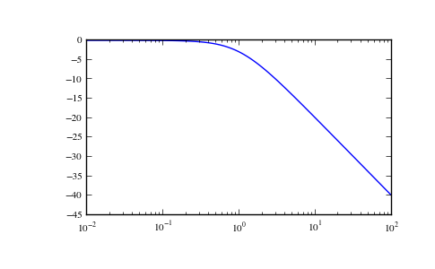
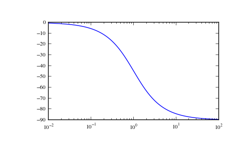

scipy.signal.lti.bode¶
- lti.bode(w=None, n=100)[source]¶
Calculate bode magnitude and phase data.
Returns a 3-tuple containing arrays of frequencies [rad/s], magnitude [dB] and phase [deg]. See scipy.signal.bode for details.
New in version 0.11.0.
Examples
>>> from scipy import signal >>> import matplotlib.pyplot as plt
>>> s1 = signal.lti([1], [1, 1]) >>> w, mag, phase = s1.bode()
>>> plt.figure() >>> plt.semilogx(w, mag) # bode magnitude plot >>> plt.figure() >>> plt.semilogx(w, phase) # bode phase plot >>> plt.show()
